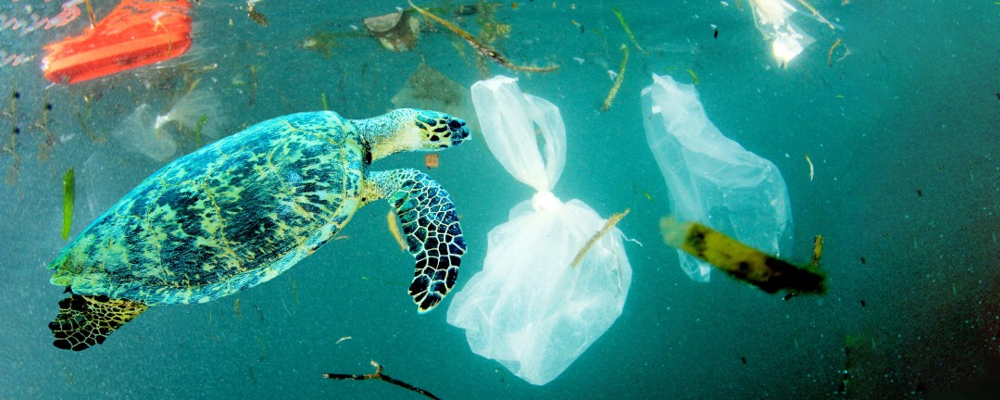

Threats to Turtles
Plastic Pollution

The problem of plastic pollution affecting turtles cannot be overstated. Turtles have been known to eat small pieces of plastic, mistaking them for prey. This can lead to serious health problems in the turtle's digestive tract. Additionally, plastic buildup can also pose a threat to the turtle's living space by making it harder for the turtle to breathe and make its way through tight spaces. To prevent further damage from being inflicted, it is imperative that we work toward goals such as reducing our plastic usage habits and sourcing out environmentally-friendly alternatives.
Learn about reducing plastic use
Climate Change
Climate change poses a serious threat to turtles' ability to nest and hatch successfully. One way this happens is through rising sea levels, which affect sex ratios among turtle populations. Furthermore, rising temperatures affect critical breeding sites as well as other vital habitats for these creatures--reducing the number of turtles that can survive in their natural environment.
Learn about how climate change affects turtles
Illegal trade
Turtles face a considerable peril in the form of illicit trading of both themselves and their eggs. Their meat, shells and jewelry are in high demand in certain markets, while the eggs are gathered up for consumption. This trend has a severe impact on these creatures' numbers - especially those at risk like the Hawksbill turtle.
Learn about How Illegal trades affects turtles